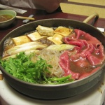
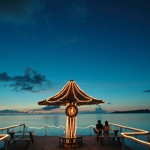
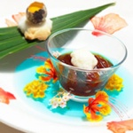
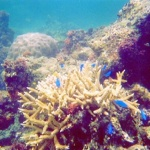
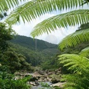
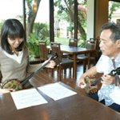
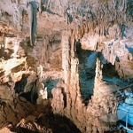
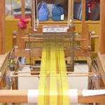
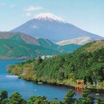
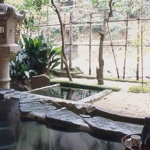

Annie & Matt’s honeymoon
While planning our wedding we've realised that having lived together for nearly seven years, we probably have all the toasters we're ever going to need!
With this in mind, we've decided that we would instead be very grateful for contributions towards our honeymoon in Japan, so that we can cram as much into our trip as possible.
This page is currently under construction, but will soon contain information about what we hope to do in Japan and how you can help us make it amazing!
Annie & Matt
×××
-
Flights to Tokyo Narita with Virgin Atlantic
Last time we flew with Virgin it was wonderful; the seats are comfy, we watched about 6 films each and we even enjoyed the plane food (something about altitude makes everything, even the driest bread roll, seem delicious!)
-
Airport Limousine Bus to our hotel
We need to get to our hotel somehow! Last time we went we took public transport and then promptly walked in the opposite direction to our hotel. We were walking the hills of Tokyo for nearly 2 hours. We’d really like to be able to get to our hotel before they close check-in!
-
Four nights in Hotel Villa Fontaine Shiodome
Only half a mile for Tsukiji Fish Market, and just over the road from Hamarikyu Gardens, this hotel looks simple but perfect for what we wanted. We can spend our mornings gazing at gigantic tuna heads and sea urchin innards at Tsukiji, before hopping on the metro to explore the city or have a relaxing picnic by the lake in the traditional gardens.
-
Guided tour of Tsukiji Fish Market & Sushi Course at a local home
We are so excited about this! Last time we were in Tokyo, we were on the other side of Tokyo to Tsukiji, and by the time we arrived there for a visit all that was left of the fantastic, world-famous displays was a lot of fish blood and slime on the ground. We’d really like to be able to see the spectacle before all the gunge, so think this tour will be the perfect way to see all the interesting bits. The really exciting part though is the visit to a local house where some nice housewife will teach us how to create sushi from the freshest fish imaginable, and then we get to eat it!
-
Meal out in Tokyo
Being the bustling metropolis that Tokyo is, there are many amazing places to go and eat. Our Holidays are always all about the food and this Honeymoon won’t be an exception, we hope to sample many of the amazing foods on offer whilst out there.
 -
Flights from Tokyo to Ishigaki Island
We’d have loved to take a boat from the mainland to Ishigaki, the main island of the tropical Yaeyama group, but unfortunately all ferry services stopped going there a few years ago so flying is the only option. To encourage foreign visitors to travel round Japan, there are amazing discount rates available for non-native travelers on domestic flights, meaning that this flight will cost less than £100 rather than over £500!
-
Eight Nights in Ishigaki at the Fusaki Resort Village
This hotel is exactly what we were looking for during our tropical island part of the trip. It’s a resort, but the rooms are actually adorable little self-contained houses built in the traditional Yaeyama style with red-tiled roofs. The little gardens lead straight down to the beach, and there’s also 6 restaurants, a pool, tennis courts and all the other wonders you’d expect in a tropical island resort. It’s also perfectly placed to explore the island, and offers a whole wealth of fantastic sounding excursions and activities to keep us occupied when we’re not lounging on the beach or by the pool. Heaven!!
 -
Meal out in Ishigaki
Whilst in Ishigaki we hope to sample some of the amazing food on offer from the restaurants near the hotel, such as Japans world famous beef.
 -
Day trip snorkeling off Ishigaki Island
The waters around the island are clear and apparently have beautiful coral reefs. On a day trip we can go out with a guide in a sailboat, dive and view the lovely fish for a couple of hours, before having lunch on the boat and heading back to the shore. I’ve snorkeled once before and loved it, so we’re really looking forward to seeing some real coral and tropical fish. Hopefully Matt will restrain himself and not try to bring any home.
 -
Jungle Trek and journey up-river on Iriomote Island
The biggest island in the Yaeyamas, Iriomote, is largely uninhabited and contains Japan’s only area of jungle. It’s been described as a mini Amazon, and even has a river running through the lush mangroves and jungle leading to a series of waterfalls. We can hop on a boat from Ishigaki and go for a day trip up the river before reaching the waterfall and trekking back through the jungle. We might even spot the legendary Iriomote Wildcat! The place looks pretty incredible and wild, and it will be like nothing we’ve ever done before. We’ll be sure to take sensible shoes.
 -
Constellation viewing evening
Ishigaki is famous for its incredibly clear skies and vivid stars. Our hotel offers small group excursions to one of the darkest spots on the island where an expert will teach us all about the constellations above us. It sounds like a fascinating and magical evening that we’d never forget.
-
Okinawan Sanshin Lesson
What a great opportunity to pick up a skill (or attempt to pick up a skill) that we’d never otherwise been able to try out! The sanshin is an ancient instrument that was apparently the precursor to the more famous shamisen, which is that stringed instrument that you probably hear most in the background of any TV programme or movie set in Japan. We’d participate in a small class with a local tutor and you never know, if we get really good at it we might pick up our own sanshin to bring home and put on recitals for you…
 -
Trip to the Ryugu Limestone Caves
Stalactites and stalagmites and rock pools, oh my! This cave looks pretty incredible and we’d love to spend a couple of hours exploring the otherworldly formations and mysterious tunnels. Nothing dangerous like spelunking or potholing though, don’t worry about that!
 -
Half-Day Dyeing Experience
No, not dying, dyeing. Ishigaki and the islands are famous for their textiles, especially those made using brightly coloured natural dyes. In this course we’d get to design and create our very own Ishigaki handkerchiefs to bring back with us as souvenirs of the trip! Strangely, the description of this activity translates as, "weaving the people aroma" which sounds rather ominous (or odourous) but should be great fun nonetheless.
 -
Ishigaki-yaki Pottery Class
Ishigaki-yaki; try saying it, it’s fun. We both absolutely love Japanese ceramics, so the chance to create our own would be too good to miss! Ishigaki pottery is known for its bright blues and watery patterns, reflecting the clear waters of the ocean surrounding the island. One of the options that the studio offers is a Bridal Course, where we would make presents for our families as a couple; we think that’s a lovely idea and would enjoy the chance to make a gift that would really mean something. We could also recreate our own Ghost moment over the pottery wheel (or not).
-
Five Nights at Hotel New Otani Tokyo
The hotel is set in acres of centuries old gardens, yet looks lovely and modern inside. We’ve chosen one up from the basic room, as they look pretty luxurious despite only costing a tiny bit more per night than the basic rooms. Help us relax away from the hustle and bustle of the city and get ready for our long journey home!
-
Three-Day Kintetsu International Hakone Free Pass
Hakone looks like such a beautiful place; it’s near Mount Fuji and is famous for its lakes, hot springs and forests. With the Free Pass we can take public transport all around the area and have a good old explore.
 -
Two Nights in Hakone at the Tonosawa Ichinoyu Honkan Ryokan
Wow! This traditional ryokan (Japanese inn) and onsen (hot spring) look just beautiful! The building is 400 years old and stands on the banks of a river. Each room has its own private outdoor rock bath, which will be wonderful. Like a perfect cliché of Japan (in a very good way), we can relax after a long day exploring the hills and lakes of Hakone by sinking into our own private bath overlooking the rushing river below. In the mornings we can start the day with another bath before tucking into one of the famous ryokan breakfasts that consist of about 20 tiny dishes brought out one after the other until we’ve eaten so much we’ll have to go have a nap before we can start our day!
 -
Photo album of our wedding and honeymoon
We’d love to create a wonderful permanent memory of our once-in-a-lifetime trip, and with the photobooks that are available now it’ll be so easy to customize an album full of our favourite moments. And hey, then we can bore you all to tears with our famous holiday photo sessions/share our memories with you so you can feel like you were there with us on the incredible honeymoon that you gave us (your choice!)